Animazeでのウルトラリープ・ハンドトラッキングの使用方法
自然な相互作用の最大の力を体験しよう。下を見て、アバターの手が反応し、リアルタイムで動くのを見てみよう。ウルトラリープのハンドトラッキング技術は世界一速く、世界一正確。コントローラーも、ウェアラブルデバイスも、学習過程も不要な、簡単で直観的な相互作用。
ウルトラリープでは、どのアバターを使用できますか？
Animazeは以下のタイプのアバター向けウルトラリープ・ハンドトラッキングに対応しています：
-
3D - 3DアバターTポーズのアップデート作業中です。親指のルールとして、仮にアバターに親指があるのであれば、うまく動きます。腕または手、もしくはその両方の無いアバターは、ウルトラリープ・ハンドトラッキングに対応していません。
-
VRM
-
Ready Player Me
アバターを選択し、下へスクロールして始めます！
Leap Motionコントローラーの設定
始める前に、Windows(4.1以上)用ウルトラリープのハンドトラッキングソフトウェアをダウンロードしてください。
始めるには、Leap Motionコントローラーをプラグインします。PCの設定からLeap Motionを検索し、Leap Motionのコントロールパネル内の設定をアップデートしてください。トラッキング設定は特に重要となります。

Animazeはウルトラリープ・ハンドトラッキングソフトウェアのデスクモードとチェストモードの両方に対応しています。
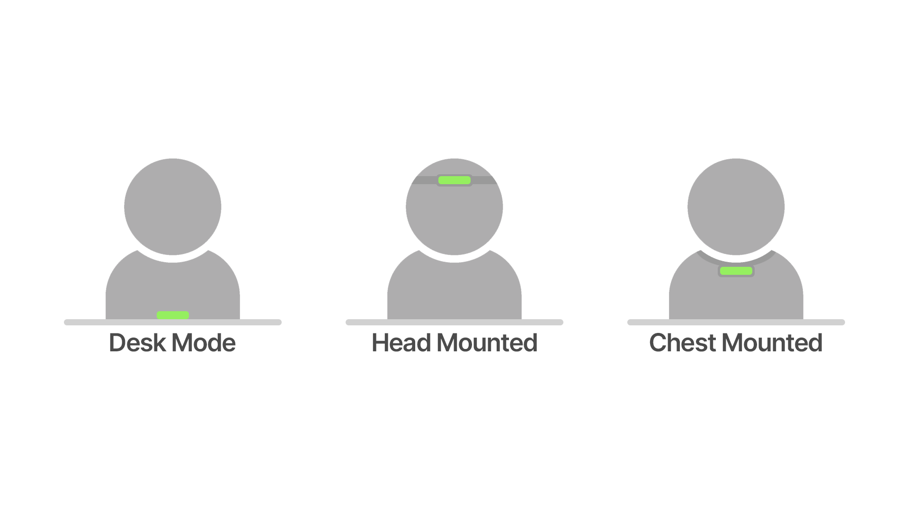
私たちの多くは、チェストモードを選択します。
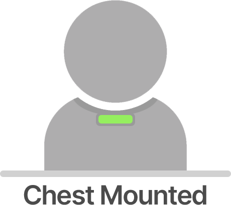
なぜなら、Leap Motionコントローラーには、トラッキングできる特定のエリアがあるためです。トラッカーを胸の位置に装着することで、腕や手をより自然に動かすことができるようになります。また、この設定にすると、大抵の場合、指のトラッキングもより正確になります。デスク・マウンティングはチェスト・マウンティングに比べ、設定が早く、多くの場合、大きな身振りのキャプチャがより良くなります。
胸にトラッカーを装着する方法は複数あります。Leap Motionチェスト・マウントはオンラインで購入できます。eBayやEtsyなどのサイトを検索してみてください。または、胸にトラッカーをテープで貼り付けることもできます。Animazeでは、多くの人がテープやマジックテープを使用します。ただし、私たちはこのようにずる賢いです。
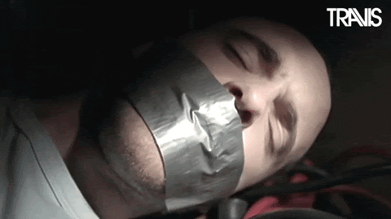
Leap Motionコントローラーの設定がきちんとできたら、次はAnimaze上でウルトラリープ・ハンドトラッキングをオンにします
それには、Animazeアプリ内のプロフィールへ行ってください：
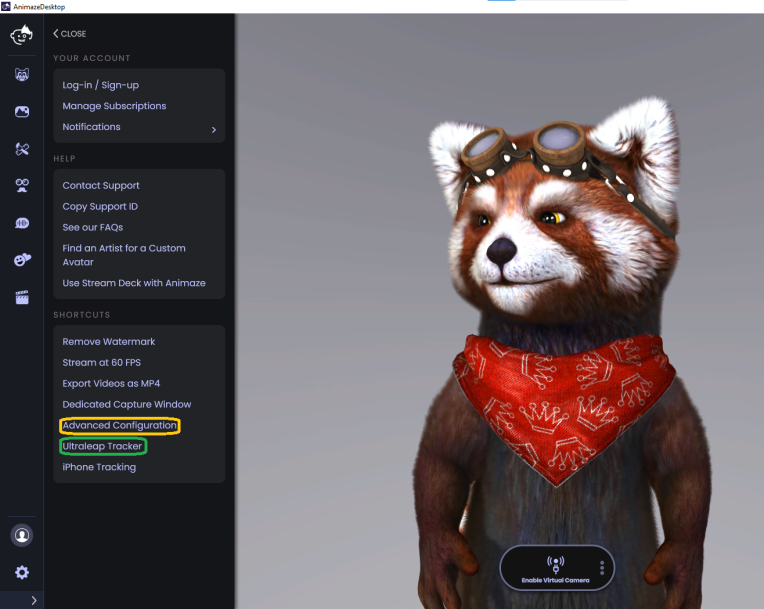
:
ハンドトラッキングの上でクリックし、ハンドトラッキングを切り替えます
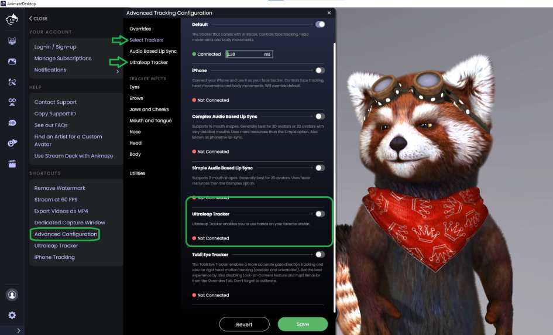
表示フィードをオンにします。
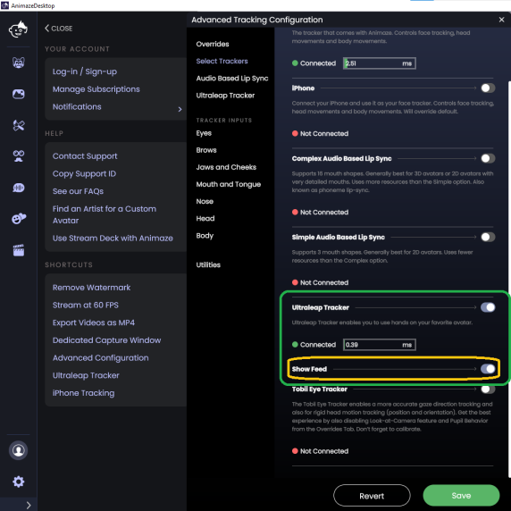
胸か頭にトラッカーを装着したら、チェストモードをオンにしてください
フィードを使用して、トラッキングの目印（ドット）がきちんとした場所に位置し、安定していることを確認します。ドットが動かないという問題が起きた場合、手のひらをトラッカーの方へ向け、トラッカーから遠い方へ手を動かしてみてください。
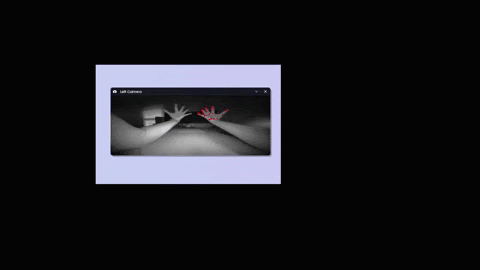
ここでやめて、設定を保存できます。ただし、すでにFAQをご覧になっているのなら、トラッキングの質を上げることのできるパワフルなコントロールがたくさんあるので、下へスクロールして詳細を見てみませんか？
Animaze上でウルトラリープ・ハンドトラッキングを最適化する
ダイレクト。ハンドトラッキング・リターゲティングを切り替えて、高度なコントロールを開きます。
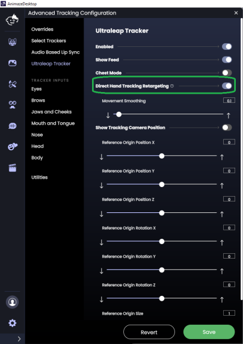
カメラの位置を表示をオンにします。この切り替えは、Leap Motionコントローラーのオーバーレイが表示され、Animazeの世界でのハンドトラッカーを視覚化する助けとなります。
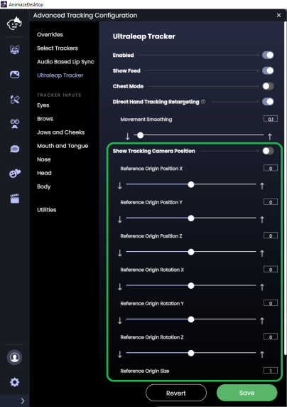
デスク・マウントを使用している場合、左の画像をご覧ください。チェスト・マウントを使用している場合、右の画像をご覧ください。配信中にオーバーレイを表示したく無い場合、オーバーレイをオフにすることが重要です。
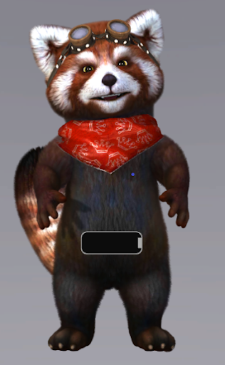
Animaze上でLeap Motionコントローラーのオーバーレイをを実際のトラッカーの位置を合わせるのに、コントロールを使用します。Animaze上でトラッカーのオーバーレイがデスクまたはチェストのトラッカーの配置に合うと、トラッキングカメラの位置（トップコントロール）をアバターの腕の長さに合うよう調整したくなるでしょう。例えば、アバターの腕が短い場合、腕の長さができるだけ長くなるよう、Zの原点を外側に動かします

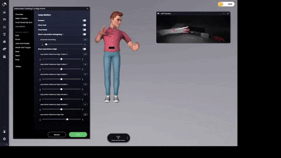
好みの長さになったら、保存を押します。
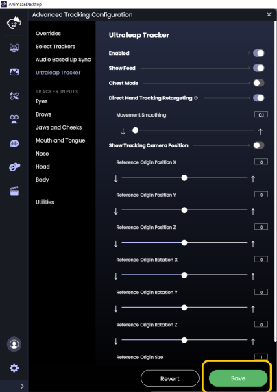
トラッキングカメラの位置を表示をオフにすることを忘れていませんか？Troubleshooting guide for Ultraleap hand tracking
ウルトラリープ・ハンドトラッキングのトラブルシューティング
様々な理由から、Leap Motionコントローラーが正常に動かなくなることがあります。Ultraleap’s troubleshooting guideで、原因を確認できます。
その他のウルトラリープ・ハンドトラッキングについて知っておくべきこと
ウルトラリープ・ハンドトラッキングを使用してアバターの手や腕を動かすには、驚くほどたくさんの計算が必要となります。その計算を簡単にし、トラッカーを使用した素晴らしい体験をしていただくため、手のサイズや腕の長さのカスタマイズがデフォルトのサイズや長さに戻ることがあります。また、Leap MotionコントローラーがAnimaze内でアクティブ担っている場合、手と腕のカスタマイズが思い通りに動かないことがあります